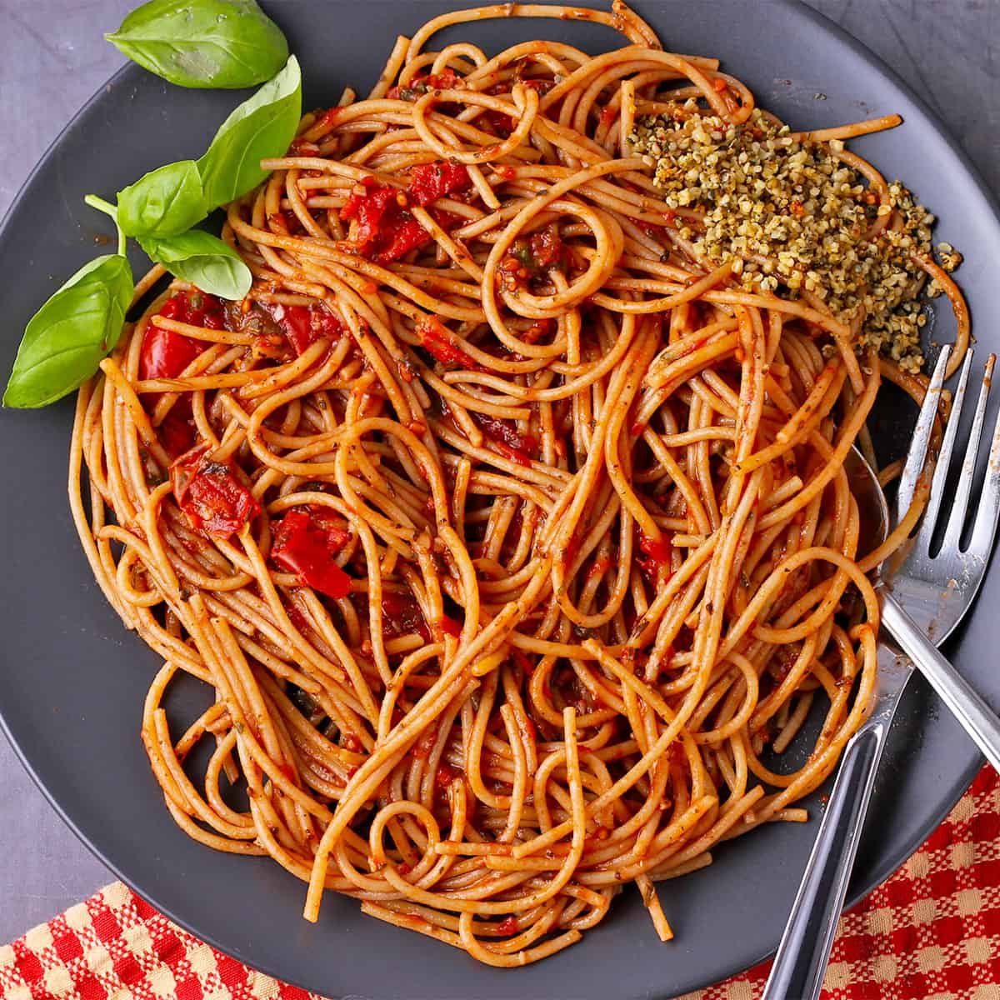

Delicious Spaghetti Bolognese

Ingredients
Ingredients and Measurements
| Ingredient |
Quantity |
| Spaghetti |
200g |
| Ground Beef |
300g |
| Onion (chopped) |
1 large |
| Tomato Sauce |
400ml |
| Garlic (minced) |
2 cloves |
| Salt & Pepper |
to taste |
| *Adjust seasoning as needed |
Instructions
- Boil a large pot of salted water and cook the spaghetti until al dente.
- Heat a pan over medium heat and brown the ground beef. Set aside.
- In the same pan, sauté the chopped onion and garlic until fragrant.
- Add the tomato sauce and simmer for 15 minutes. Season with salt & pepper.
- Mix the cooked spaghetti with the sauce and serve hot. Enjoy your meal!
Nutrition Note
Spaghetti Bolognese is rich in protein, thanks to the ground beef, and carbohydrates from the pasta. Be mindful of portion sizes if you're counting calories.
Additional Tips
- For a richer flavor, add a dash of red wine to the sauce.
- Garnish with freshly grated Parmesan cheese.
- Want a healthier option? Use whole wheat spaghetti.
Learn more recipes here.
Water boils at 100°C and pasta absorbs the water, making it the perfect texture.